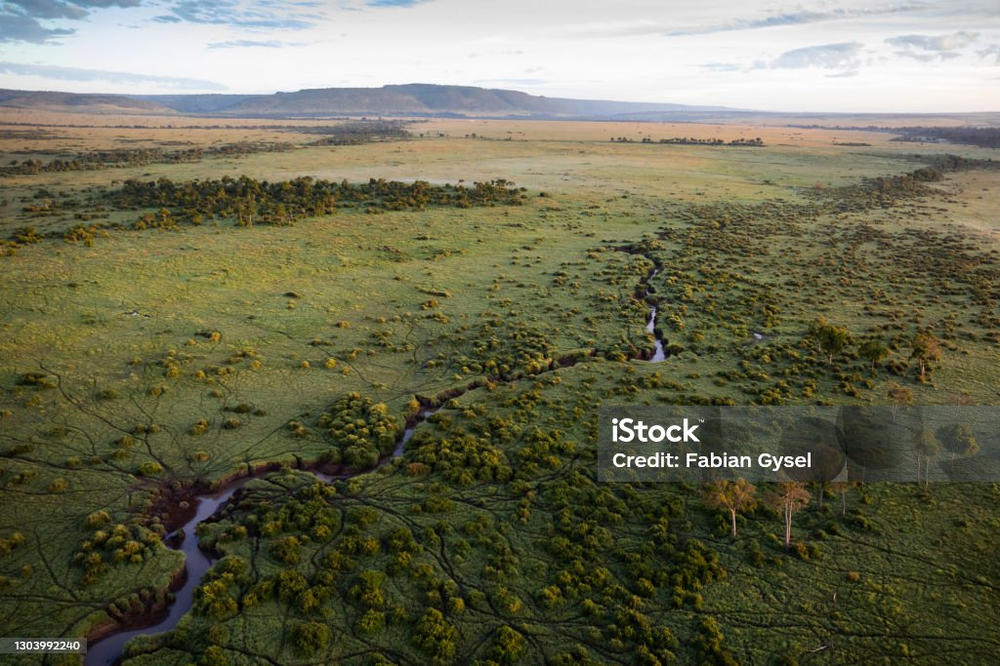
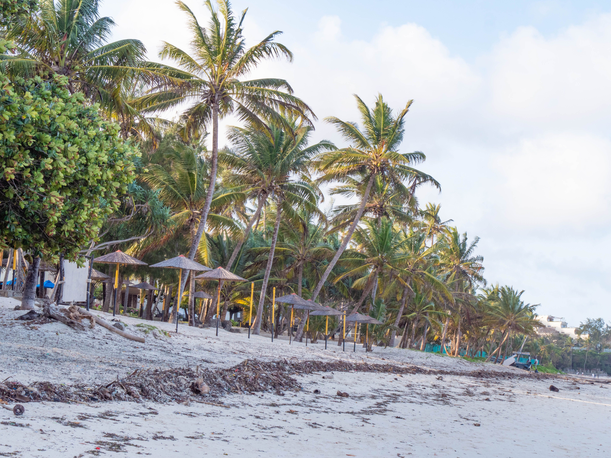
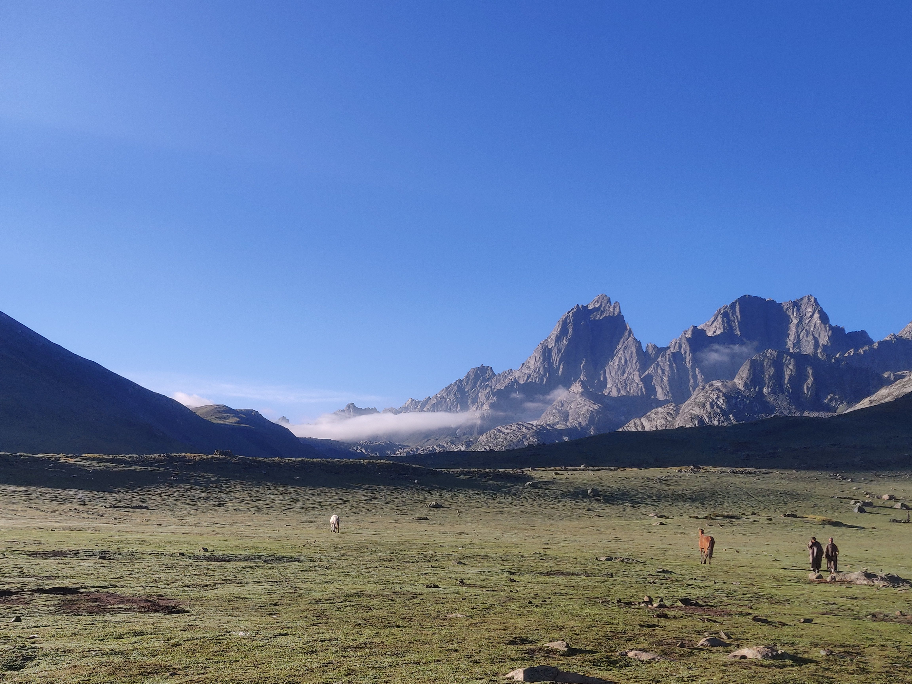
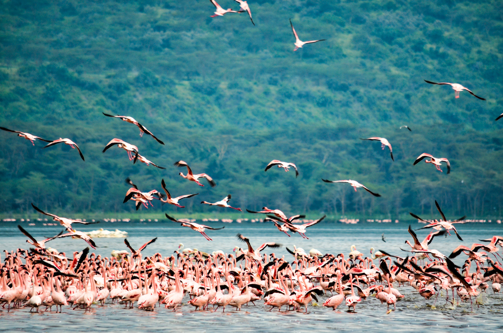

Experience the breathtaking landscapes, rich culture, and iconic wildlife of Kenya through stunning photography.
Kenya through the lens is a photography project dedicated to showcasing the beauty of Kenya.From the wildlife roaming the maasai mara to the white sandy beaches of Diani and the towering peaks of Mount Kenya, every image tells a unique story. Our goal is to inspire adventure, appreciation, and conservation through photography.

Experience the thrill of the Great Migration and witness the incredible wildlife of the Maasai Mara National Reserve.

Relax on the pristine white sands and enjoy the crystal-clear waters of Diani Beach, one of Kenya's most beautiful coastal destinations.

Embark on an adventure to the second-highest peak in Africa and explore the diverse ecosystems and stunning landscapes of Mount Kenya National Park.

Discover the beauty of Lake Nakuru, famous for its flamingos and diverse birdlife, as well as its picturesque landscapes and wildlife.
Photography is the story I fail to put into words.
- Annie Leibovitz